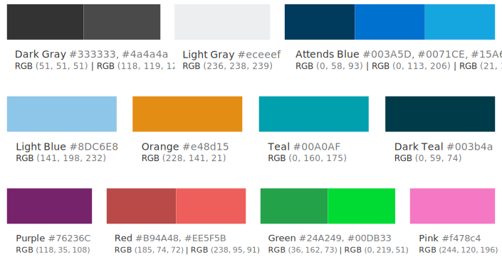
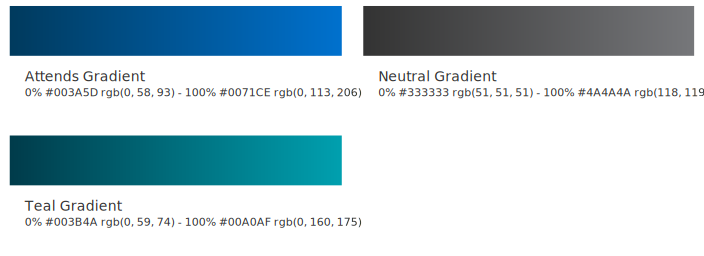
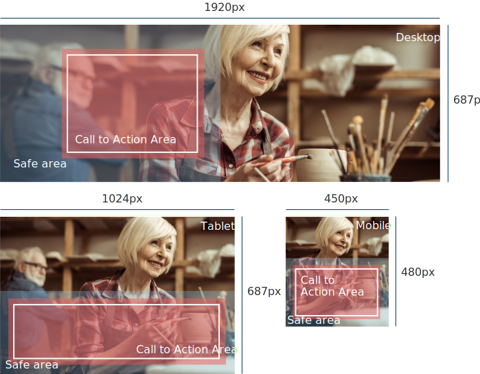
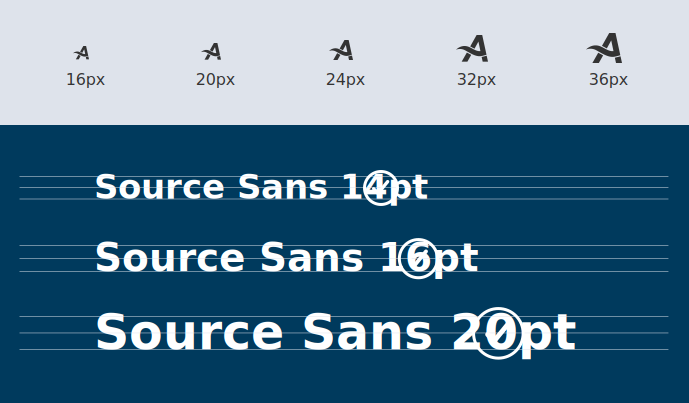

Content & Visuals
Understand how you can use brand colors and style to customise your layouts.
1. Voice and tone
What is voice and tone?
Our voice is a reflection of who we are. We should always sound like ourselves. Our tone adapts appropriately to the context and situation. The best way to decide what tone to use is to ask yourself what customers are likely feeling when they encounter your message so you can decide how to respond.
For example, when Customers make a purchase for the first time, they might be feeling excited, accomplished, and maybe a little bit unsure of what to do next. We can respond to this by congratulating them and giving them the information they need to process their order.
When customers encounter an error message, they might be feeling anxious, stressed out, and that in 90% of times results in drop from the purchase. We can respond to this by stating what went wrong and giving clear direction about how to resolve the problem. We never want to use a negative tone because we are here to help people.
Voice guidelines
Voice is the foundation for communicating about our products and delivering brand messages. For example at Attends, our voice expresses the core of our personality, while bringing comfort, confidence, freedom, dignity and a sense of connection to our users. Through careful use of the Attends voice, we help empower users to meet their personal goals and ease their life’s frustrations.
Tone Approach
Tone conveys an attitude towards both the subject matter and the reader. All content – whether it’s introductory text on the UI, an error message, or a blog post – tells part of a bigger story. Good storytellers are skilled in two main areas: what they are saying (the substantive content) and how to say it to any given audience (the style and tone in which it is presented). Be a good storyteller.
2. Typography
Make Your UI Reader-Friendly
In the case of Attends, we are working to improve mature and elder people’s lives so, enhanced readability is crucial when capturing our audience. Custom web design for senior citizens can be achieved by following best practices such as designing with larger UI design elements, using contrasting colors and most important of all have balanced font sizing and weight, to help highlight important content. It is also important to perform appropriate user testing regularly.
Headline H1
Headline H2
Headline H3
Headline H4
Form Label
Paragraph / body text
Small Paragraph / body text
Hint / info text
Small hint / info text
3. Colours
Colour Anatomy
Attends default themes are derived from the Attends US design language color palette. The gray color family is dominant in the default themes, making use of subtle shifts in value to help organize content into distinct zones.
The core blue color family serves as the primary action color across all Attends products and experiences. Additional colors are used sparingly and purposefully.
Gradients
These gradient variations are meant to serve as solutions for any different scenarios and applications. The core blue and gray color gradients can be used in special cases for backgrounds, buttons and call to actions.
4. Images
Focus on the Target
Remember the voice and tone we discussed earlier? With that in mind, make sure each of the images you choose reflect those values. Define the colors and tones across all photos you choose with the pattern in mind. Whatever the culture, race, ethnic background or religion, the imagery tone needs to be similar and more important, transmit expressiveness and spontaneity.
Image Patterns
In the case of Domtar Personal Care whose mission statement is:
Personal Care is not just a business, it’s a mission. Absorbent hygiene solutions improve quality of life for millions of people around the world. We champion health, dignity and comfort through what we make and how we work. - Because for us, it’s personal.
Based on this statement the image pattern would reflect keywords such as:
Dignity, independence, joviality, healthy, mature, active, spontaneous, clean, light and happy
environment, special moments, casual, multicultural, confidence, loveliness, emotive.
Images in use
When choosing an image to be used on our websites you must have certain considerations in mind. What’s the message you want to tell? Who are you telling it to? How do they connect with your message? are the first questions you have to ask yourself.
After that, think of the technical needs and restrictions:
- Is it a banner, an article post or a card? Or could it be all of them?
- You need to consider the action area, the safe area and where the call to action should go.
- Have in mind the multiple screen sizes that will display the image and ensure it works accordingly.
Usage in banners
Whenever you need to use Images on a banner, we always advise choosing backgrounds that distinguish areas for CTA readability (see above). It is also advised to have the major focus of the image on either the right or left side of the banner in order to leave enough space for title, text and CTA button.
Although we don’t advise it, for exceptional cases a semi-transparent background can be used for the CTA area. The banner image should work well accross desktop, tablet and mobile screens. And always remember, quality is a distinguisher between a good and a bad product so, we always advise to use images at twice the size (@2x - retina display). You can either use file formats in .JPEG or .PNG, where the latter might have transparent areas, but bear in mind the constraints of the component.
To find out more about banners see the relevant section in our components chapter.
Find the perfect images. Where, when and how?
Almost 2/3 (two thirds) of the population affirms to be visual learners, and it’s proven that adding images to accompany information increases people’s retention of said information in their memory after three days from 10% to 65%. - Source: stockphotos.com
Whether your message is simple or complex, first you need your image to capture the public at first glance. You need to catch their attention and lure them in and interest them in coming to see what you are offering. In order to do that, with the consistency we suggest on multiple sections of this document, the DCoE selected a global partner to help you not only find the right fit for your need, but also keep everything tidy with the rest of the brand’s identity. Getty Images® is our global stock assets partner solution for any imagery, infographics and video. If you need any further information on how to use it, you can request access to our team and watch the demo.
Usage in Cards
When using images be aware of the card component’s style guidelines and ensure you respect brand tones and image patterns.
The image should align with the top and sides of the card and its proportions should be 4x3.5 with relation to the size of the card or the column’s width.
For example a 3 column layout would mean each card’s width equals 440px therefore the image should be 440x390px. We also recommend exporting images with twice the regular size for retina displays with the naming convention “image-name@2x.jpg”.
To find out more about cards see the relevant section in our components chapter.
5. Iconograpy
Icons are visual symbols used to represent ideas, objects, or actions. They communicate messages at a glance, afford interactivity, and draw attention to important information.
Usage for designers
The UI icons that appear within Attends components are generally 16px squares, however icons sized at 20px, 24px, 32px and 36px can be also used within the UI. Icons should only be used at their original sizes and not resized in code unless they are exported in .SVG file type, a powerful vector format that allows multiple resizing without losing quality nor resolution.
Icons with 16px, 20px and 24px are optimized to feel balanced when paired with 14pt, 16pt and 20pt Attends approved digital font Source Sans. Use 32px and 36px when larger icons are needed.
Do use the correct icon size with Source Sans
Don’t alter the icon-text size ratio
Touch Targets
All touch targets for interactive icons need to be 42px or larger. Developers can add padding to a touch target with CSS to meet the 42px requirement.
The menu button that is also a touch target may have a 20px x 20px icon centered in a 44px x 44px button.
Color
Icons are always a solid, monochromatic or double colored and need to pass the same color contrast ratio as typography. The color of the icon should reflect the importance of the icon’s action which should always be to help guide a user. It’s also important to note that Attends icons themselves do not have interaction states, only their backgrounds do.
Do match your icon color with your text color when pairing them.
Do use icon's double color in consistency with your text color when pairing them.
Don’t use different colors for text and icons.
Alignment
When used next to text, icons should be center-aligned.
Do center-align icons when they’re next to text.
Don’t baseline-align icons to the text.
6. Animation
Animation explained
In the case of Attends we stand for confidence, comfort, dignity and dynamic premium absorbency. As such, the absorbency process represents the main focus of our core technologies which can be identified as a progress curve from wet to dry. The basis for this is an animation curve: inspired by the core technologies performance of our absorbent products, it is based on a powerful absorption at the start and a fast drying at the end.
Animation Curve
CSS definition for web and responsive devices transition-timing-function: cubic-bezier(0.75, 0.02, 0.5, 1);
Examples
CSS animations make a website visually attractive and enhance the user experience. They may include some page transition, effects and animations. This is also a great way to increase content marketing and keep the user engaged.
Hover Animation
Hover animations or interactions are an easy way to make websites look and feel more appealing. Here follows a series of hover effects for designers and developers to choose from based on their own needs.
Direction of Movement
Elements are moved either horizontally or vertically but not at an angle.
Scale
Transformation into a different state is controlled by means of scaling. Scaling can be combined with other animation parameters, such as a movement. In some cases when scaling goes beyond the element’s frame size, the scaled object is masked within the frame of the element.
Opacity
The showing and hiding of elements is controlled by means of opacity. Change in opacity can be combined with other animation parameters, such as a movement, in order to create a more dynamic experience.
Rotation
Rotation is limited to small elements and is not combined with other animation parameters.
Timing
The duration of an animation depends on the size of the elements and the distance it covers. If there are several elements or animation stages, a clear-cut sequence should be defined. As few elements as possible are animated simultaneously.